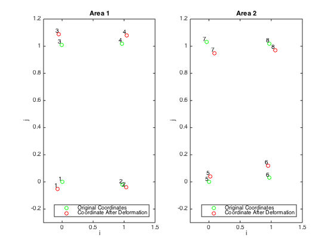

Contents
- a) Plot points for before and after deformation
- b) find the four displacement gradients, ∂u/∂x0
- c) Utilize these displacement gradients to compute the Lagrangian strain tensor, E, and the infinitessimal strain tensor, ε,for each quadrant.
- d) Which strain tensor, Lagrangian or infinitesimal, is more appropriate for describing this deformation?
- e) Do the two areas indicate that there is homogeneous deformation across the tissue?
% Kyle King % BIOE404 % 10-22-2014 clc, clear all, close all % boilerplate % Intialize Data from Table - each row is a new marker, column (1) = i coordinates, etc. preMarkers = [0, 0; 0.98, -0.02; -0.01, 1.01; 0.97, 1.02; 0, 0; 0.97, 0.03; -0.04, 1.03; 0.97, 1.02]; postMarkers = [-0.07, -0.05; 1.03, -0.04; -0.05, 1.09; 1.04, 1.08; 0.02, 0.04; 0.95, 0.12; 0.09, 0.95; 1.06, 0.97];
a) Plot points for before and after deformation
% Indicate number of each spot labels = cellstr( num2str([1:4]') ); labels2 = cellstr( num2str([5:8]') ); % Plot the first area figure(1), subplot(1, 2, 1) plot(preMarkers(1:4,1), preMarkers(1:4,2), 'go'), hold on plot(postMarkers(1:4, 1), postMarkers(1:4, 2), 'ro') % Label the points from 1->4 text(preMarkers(1:4,1), preMarkers(1:4,2), labels, 'VerticalAlignment','bottom', 'HorizontalAlignment','right') text(postMarkers(1:4,1), postMarkers(1:4,2), labels, 'VerticalAlignment','bottom', 'HorizontalAlignment','right') legend('Original Coordinates', 'Coordinate After Deformation', 'Location','SouthEast'), title('Area 1'), xlabel('i'), ylabel('j'), axis([-0.3, 1.5, -0.3, 1.2]) , hold off hold off % Plot the second area subplot(1, 2, 2) plot(preMarkers(5:8,1), preMarkers(5:8,2), 'go'), hold on plot(postMarkers(5:8, 1), postMarkers(5:8, 2), 'ro') % Label the points from 5->8 text(preMarkers(5:8,1), preMarkers(5:8,2), labels2, 'VerticalAlignment','bottom', 'HorizontalAlignment','right') text(postMarkers(5:8,1), postMarkers(5:8,2), labels2, 'VerticalAlignment','bottom', 'HorizontalAlignment','right') legend('Original Coordinates', 'Coordinate After Deformation', 'Location','SouthEast'), title('Area 2'), xlabel('i'), ylabel('j'), axis([-0.3, 1.5, -0.3, 1.2]) , hold off hold off % Intialize Marker Table of initial point, final point, and displacement markerTable = zeros(8, 6); for i = 1:8 for j = 1:2 markerTable(i,j) = preMarkers(i, j); markerTable(i, j+2) = postMarkers(i,j); % Find the displacement in columns 5 and 6 of markerTable markerTable(i, j+3) = postMarkers(i,1) - preMarkers(i, 1); markerTable(i, j+4) = postMarkers(i,2) - preMarkers(i, 2); end end % markerTable % for testing
b) find the four displacement gradients, ∂u/∂x0
point 1-2, 3-4, 5-6, 7-8 for ∂u/∂x0i
for areaAnalysis = 0:4:4 sumiMark = 0; sumjMark = 0; for i = 2:2:4 sumiMark = sumiMark + ((markerTable(i+areaAnalysis, 5) - markerTable(i-1+areaAnalysis, 5))/(markerTable(i+areaAnalysis, 1) - markerTable(i-1+areaAnalysis, 1))); sumjMark = sumjMark + ((markerTable(i+areaAnalysis, 6) - markerTable(i-1+areaAnalysis, 6))/(markerTable(i+areaAnalysis, 1) - markerTable(i-1+areaAnalysis, 1))); end duidxi(areaAnalysis/4+1) = (1/2)*sumiMark; dujdxi(areaAnalysis/4+1) = (1/2)*sumjMark; % 1-3, 2-4, 5-7, 6-8 to calculate ∂u/∂x0j sumiMark = 0; sumjMark = 0; for i = 3:1:4 sumiMark = sumiMark + ((markerTable(i+areaAnalysis, 5) - markerTable(i-2+areaAnalysis, 5))/(markerTable(i+areaAnalysis, 2) - markerTable(i-2+areaAnalysis, 2))); sumjMark = sumjMark + ((markerTable(i+areaAnalysis, 6) - markerTable(i-2+areaAnalysis, 6))/(markerTable(i+areaAnalysis, 2) - markerTable(i-2+areaAnalysis, 2))); end duidxj(areaAnalysis/4+1) = (1/2)*sumiMark; dujdxj(areaAnalysis/4+1) = (1/2)*sumjMark; end % Print answers disp([' In order of: ' 'Area 1' ' then Area 2']) duidxi dujdxi duidxj dujdxj
In order of: Area 1 then Area 2
duidxi =
0.1173 -0.0404
dujdxi =
0.0051 0.0406
duidxj =
0.0245 0.1090
dujdxj =
0.1028 -0.1290
c) Utilize these displacement gradients to compute the Lagrangian strain tensor, E, and the infinitessimal strain tensor, ε,for each quadrant.
for areaAnalysis = 1:2 Eii(areaAnalysis) = (1/2)*(2*duidxi(areaAnalysis) + duidxi(areaAnalysis)^2 + duidxj(areaAnalysis)^2); Eij(areaAnalysis) = (1/2)*(duidxj(areaAnalysis) + dujdxi(areaAnalysis) + duidxj(areaAnalysis)*duidxi(areaAnalysis) + dujdxi(areaAnalysis)*dujdxj(areaAnalysis)); Eji(areaAnalysis) = (1/2)*(duidxj(areaAnalysis) + dujdxi(areaAnalysis) + duidxj(areaAnalysis)*duidxi(areaAnalysis) + dujdxi(areaAnalysis)*dujdxj(areaAnalysis)); Ejj(areaAnalysis) = (1/2)*(2*dujdxj(areaAnalysis) + dujdxi(areaAnalysis)^2 + dujdxj(areaAnalysis)^2); eii(areaAnalysis) = (1/2)*(2*duidxi(areaAnalysis)); eij(areaAnalysis) = (1/2)*(duidxj(areaAnalysis) + dujdxi(areaAnalysis)); eji(areaAnalysis) = (1/2)*(duidxj(areaAnalysis) + dujdxi(areaAnalysis)); ejj(areaAnalysis) = (1/2)*(2*dujdxj(areaAnalysis)); end % Lagrangian EareaOne = [Eii(1), Eij(1); Eji(1), Ejj(1)] % Infinitesimal eareaOne = [eii(1), eij(1); eji(1), ejj(1)] EareaTwo = [Eii(2), Eij(2); Eji(2), Ejj(2)] eareaTwo = [eii(2), eij(2); eji(2), ejj(2)]
EareaOne =
0.1245 0.0165
0.0165 0.1081
eareaOne =
0.1173 0.0148
0.0148 0.1028
EareaTwo =
-0.0337 0.0700
0.0700 -0.1198
eareaTwo =
-0.0404 0.0748
0.0748 -0.1290
d) Which strain tensor, Lagrangian or infinitesimal, is more appropriate for describing this deformation?
disp('Lagrangian tensor analysis works best for large strains where the squared term represents a similar magnitude value of the summation, whereas the infinitesimal strain is best for minuscule strains such as those in cells of tissue. In this case the strain is great enough to warrant the more specific analysis of the Lagrangian strain tensor as the infinitesimal strain tensor deviates greater than 1% from the Lagrangian calculation')
Lagrangian tensor analysis works best for large strains where the squared term represents a similar magnitude value of the summation, whereas the infinitesimal strain is best for minuscule strains such as those in cells of tissue. In this case the strain is great enough to warrant the more specific analysis of the Lagrangian strain tensor as the infinitesimal strain tensor deviates greater than 1% from the Lagrangian calculation
e) Do the two areas indicate that there is homogeneous deformation across the tissue?
disp('There is non-homogeneous deformation as indicated by the variation in the duidxi, dujdxi, duidxj, and dujdxj terms for both areas')
There is non-homogeneous deformation as indicated by the variation in the duidxi, dujdxi, duidxj, and dujdxj terms for both areas